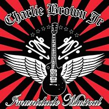
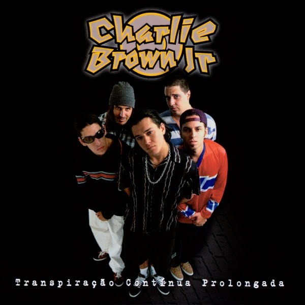
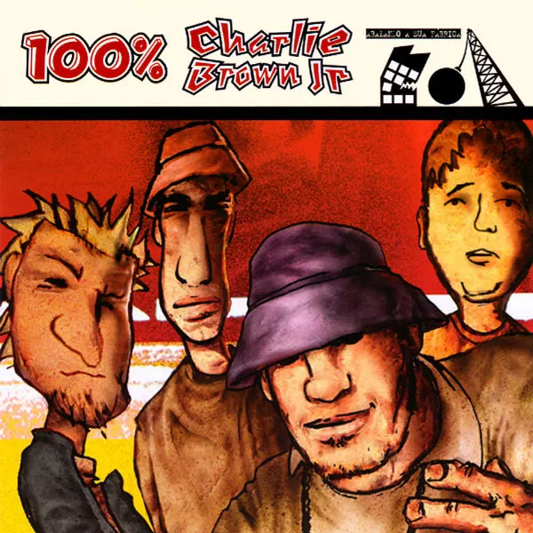
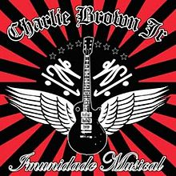
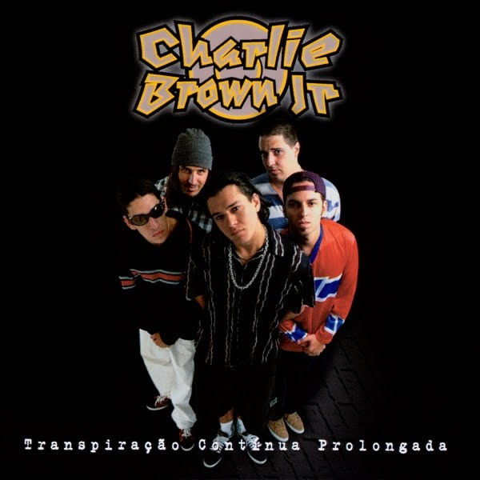
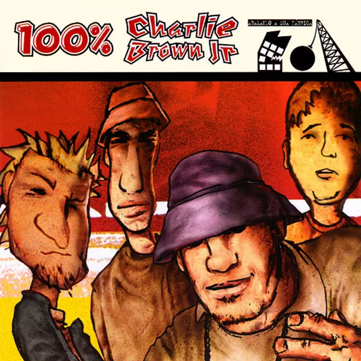

Chorão
Alexandre Magno Abrão
Biografia
Premiações
Discografia
Fotografias
Sou Chorão, um artista conhecido de uma galera ai em um país aí...
Só quero cantar e manter minha alma viva, tá ligado né?
se quer me conhecer um pouqinho mais fica ae e curte oq só os loucos sabem.
Biografia
Eu, Chorao
Toda positividade eu desejo a você
pois precisamos disso nos dias de luta.
Tudo o que é bom dura tempo o bastante
para que se torne inesquecível.
"
Se existe alguma metáfora para explicar o quão dedicado e
perfeccionista era Chorão, líder da banda Charlie Brown Jr.
ela se encontra no skate, esporte amado pelo cantor e
compositor. Quando via a chance de realizar uma manobra
perfeita na pista, ele não parava até sentir que estava 100%
perfeita. E era assim na frente e atrás dos palcos
"
Discografia
Imunidade musical
2005
Transpiração Contínua
Prolongada
1997
100% Charlie Brown Jr. -
abalando a sua fábrica
2001
Premiações
No MTV Video Music Brasil (VMB), um dos principais eventos
1998 - Banda Revelação
2001 - Escolha da Audiência (Rubão, o Dono do Mundo).
2001 - Melhor Videoclipe de Rock (Rubão, o Dono do Mundo).
1998 - Banda Revelação
2003 - Escolha da Audiência (Papo Reto).
Melhor Videoclipe de Rock (Só por uma Noite).
Por consequência, o conjunto também venceu três prêmios no
Prêmio Multishow de Música Brasileira.
2004 - Melhor Instrumentista (Champignon).
2007 - Melhor Canção (Senhor do Tempo)
2008 -Melhor Videoclipe (Pontes Indestrutíveis).
2005 - Melhor Álbum de Rock Brasileiro (Tâmo aí na Atividade).
2010 - Melhor Álbum de Rock Brasileiro (Camisa 10 Joga Bola Até na Chuva)


 




